Unpublished design proposal. Specs 011, 013 and 017 and current Confluence sources remain unchanged.
Provider Connectivity Solution Summary
Logical Feature Specification · Sequence and Reuse Assessment · Folder
Revision overview
This view develops the initial SPEC-SEI-034 brainstorming assessment into a solution summary. Its permanent ID is retained. Detailed behaviour moves to SPEC-SEI-035; contract comparisons, formats and engineering gates move to SPEC-SEI-036. The sources 011, 013 and 017 remain unchanged, with their detailed IDs and publication settings.
All three views are unpublished drafts. The Global API proposal in SPEC-SEI-013 remains the proposed direction. Existing API coverage, one external provider covering both routes, transformation ownership and the first delivery subset remain open.
1 Business problem and outcomes
Public platform means Spain’s SPFE, operated by AEAT. Public service names and technical identifiers follow the original catalogue, formats and WSDL files under context. Use the shared glossary for common terms.
Sage products need to send and receive invoices through the permitted public or private route, obtain the correct files and understand each action's result. Separate product integrations can duplicate work and give different meanings to the same status.
The intended outcome is one product integration with capability-specific readiness, identifiable source and derived files, independent delivery/public-copy results, and an owned next action when work is incomplete. A shared interface must preserve each external contract's authority, format and recovery rules. REF-BASE; REF-JOURNEYS.
2 Scope and actors
| Actor | Expected use |
|---|---|
| Authorised business user or delegate | Request invoice work for the represented business and inspect the result. |
| Product or approved partner caller | Use permitted Sage capabilities within its business, object and environment scope. Caller authentication remains separate from business authority. |
| Public platform or private provider | Execute or expose only the qualified external capability. The public platform and a private provider retain different roles and contracts. |
| Operations | Resolve incomplete evidence and unknown outcomes against the original action. |
In scope: public/private connectivity for sending, receiving, file retrieval and result observation; shared controls; country/provider differences; reuse assessment. The sending, receiving and lifecycle sets retain business behaviour. SPEC-SEI-014 retains connection and route ownership.
Provider selection, commercial commitments, new endpoints, production activation, automatic failover and changes to Spain obligations are outside this proposal. Peppol is excluded from this review.
3 Proposed solution direction
Use the Global API for products and authorised partners, with the existing public platform connector and provider adapters. This groups the common access proposal in 013, the public platform connector in 011 and the candidate B2B Router binding in 017. It does not establish one deployed service or identical external interfaces. REF-BASE.

Full-size SVG · Editable Draw.io · PNG.


This is the unchanged exchange diagram from SPEC-SEI-013. GPA-03–08 retain their existing meanings: check access, save intake, assign each exchange action, record evidence, provide retrieval and reconcile uncertain outcomes. The E-Invoice Service coordinates the invoice work. Supporting responsibilities stay with Other Services; physical service ownership remains open. The public and provider details are in the logical view.
| Option | Assessment and tradeoff |
|---|---|
| Common Sage API, direct public platform and private-provider bindings | Preferred review baseline. Products share an access contract; Sage qualifies both external bindings. Existing implementation fit remains unknown. |
| Common Sage API, one external provider for public and private work | Keep open. It could reduce transport work if the provider contract covers every selected action, authority, public evidence, recovery and exit requirement. Current evidence does not establish the combined SPFE scope. |
| Separate APIs exposed to each product | Consider only for a documented compatibility, security or operational constraint that the shared contract cannot meet. It adds product integration and support work. |
A Provider API in 013 is a Sage-owned capability within the Global API. A provider-owned API belongs to an external provider. Bidirectional exchange does not determine which party initiates a call. These meanings follow the glossary.
4 Product impact and reuse
| Area | Impact to assess | Reuse boundary |
|---|---|---|
| Product access | Qualify whether current submission, retrieval and events can express the selected Spain capabilities. No breaking change is established. | Existing Global API implementation is a candidate; API owner must supply actual coverage. |
| Sending and receiving | Expose supported directions separately and preserve independent action results. | Shared behaviour needs country/provider binding. A successful sending check does not establish receiving readiness. |
| File handling | Distinguish source files, derived representations and external transport packaging. | Assess each source/target profile. Existing DTS is the preferred transformation candidate, subject to qualification. |
| Operations | Preserve original correlation, known successes and historical context during recovery. | Proposed recovery patterns are reusable; actual build and operating coverage remain unknown. |
Spain identity, routing, public-copy and reporting rules remain country-specific. They must not become another country's defaults. The engineering view records local changes, owners and evidence needed before activation. REF-BASE; REF-DTS.
5 Decisions and review boundary
| Open decision | Owner and evidence needed | Effect |
|---|---|---|
| Actual shared API fit | API owner + Architecture: selected contract/build, current callers, authority model and compatibility. | Blocks a promise of unchanged product integration. |
| One external provider covering both routes | Provider owner + Spain Product/Compliance: contracted public/private capability matrix and per-action public evidence. | Keep direct-public qualification available. Generic B2G, tax-report or format support cannot close the gate. |
| First scope and transformation ownership | Product + Engineering + DTS/Operations: selected directions, profiles, mappings, execution and support owners. | Qualify capabilities independently before pilot. |
| Later document publication | Document owner: map the combined topic to existing stable pages after review. | Current publication selections stay unchanged. |
Review behaviour and exceptions in 035, then contracts, sequences and owned gates in 036. Document validation does not qualify an implementation.
REF Source references
Sources support only the claims and elements stated below. Product requirements and proposed Sage controls have separate authority from external contracts. The Spain evidence guide records the baseline and unresolved conflicts.
| REF ID | Original source and version/date | Exact location, supported claim and limit |
|---|---|---|
| REF-BASE | SPEC-SEI-011, 013, 017, updated 20 October 2026; 014, current repository source. | 011 Part 1 §§1–2 and Part 4 gates; 013 Part 1 §§1–4 and GPA-05/08; 017 Parts 1–4; 014 SPC-01–08. Canonical draft design and scope references. Not approved external contracts or build evidence. |
| REF-JOURNEYS | Sending assessment, SPEC-SEI-024 and receiving assessment, SPEC-SEI-027, repository review set, 22 October 2026. | Sequences and reuse gaps; their linked logical specs retain detailed behaviour. Product/BA sources, not external contract proof. |
| REF-DTS | SPEC-SEI-008 — Spain mapper migration to DTS, current repository source. | Reuse qualification and migration scope. Preferred existing transformation candidate; selected builds, mappings, rule packs and operations still require evidence. |